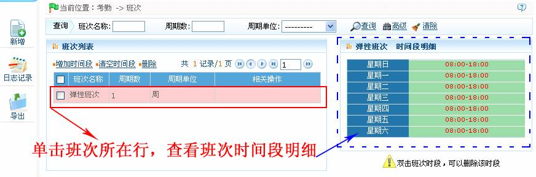
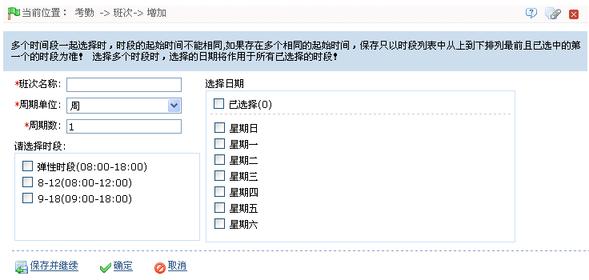
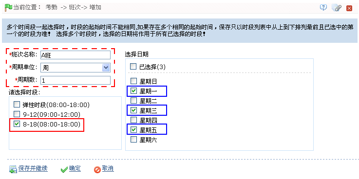
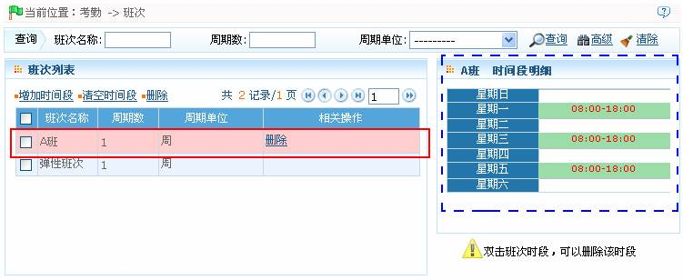
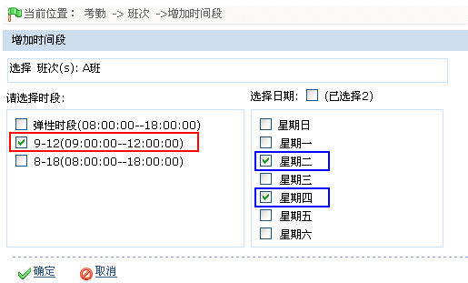
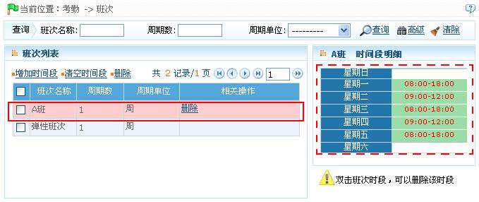

7.4 班次管理
班次是由各种预先设定的一个或多个考勤时段按照一定的顺序和循环周期组成，是预设的人员上下班时间表。要对人员考勤，首先就必须要设置班次。本系统总共支持999个班次。
点击【考勤】 【班次】，进入班次管理主界面，显示查询栏和班次列表信息，查询功能可以方便的进行班次查询；列表中显示当前系统所有班次，点击班次所在行，右边的时间段明细列表会以图表形式显示该班次的时间段明细。
【班次】，进入班次管理主界面，显示查询栏和班次列表信息，查询功能可以方便的进行班次查询；列表中显示当前系统所有班次，点击班次所在行，右边的时间段明细列表会以图表形式显示该班次的时间段明细。

弹性班次
弹性班次是系统默认设置的一个考勤班次，是弹性时段在一周时间内的循环。对于上下班时间不固定，又需要考勤的人员，可以使用弹性班次进行排班；或者人员在无排班情况下，有打卡记录，也会以弹性班次计算考勤，并归类到某种加班类上，如休息日加班、节假日加班。弹性班次适用于企业老板、业务人员、服务人员、及订单型生产人员等。
例如：某部门人员仅在有工作时上班，进行正常的签到签退，则在考勤时默认使用弹性班次，汇总时显示每次的签到、签退时间，并以偶数次计算加班次数。
7.4.1 新增班次
1、单击班次页面上的【新增】按钮，进入新增班次页面：

根据需要进行参数设置，具体设置方法如下：
班次名称：任意字符，最多30个字符组合，不能重复。
周期数：班次循环周期=周期数*周期单位。
周期单位：有天、周、月三个选项。
 备注：系统根据用户选择的“周期单位”和输入的“周期数”，在“选择日期”框中显示可供选择的日期。
备注：系统根据用户选择的“周期单位”和输入的“周期数”，在“选择日期”框中显示可供选择的日期。
选择时段：选择该班次使用的时段。需要在时段中预先设置，具体操作请参见7.2 考勤时段。
选择日期：在选择日期框中，选择将班次（时段）应用到周期内的哪天。
2、设置完成后后，单击【确定】按钮，保存并返回班次页面，此时班次列表中，将显示刚新增的班次信息。
 注意：班次是用户所选择的时段在用户所设置的周期内的循环。未选中的日期即为休假。用户为员工排班时，只需选择开始和结束日期及所用班次，无需确认哪天须上班或休假；在选定班次后，系统会根据被选定班次自身设置的周期判断哪天须上班或休假。
注意：班次是用户所选择的时段在用户所设置的周期内的循环。未选中的日期即为休假。用户为员工排班时，只需选择开始和结束日期及所用班次，无需确认哪天须上班或休假；在选定班次后，系统会根据被选定班次自身设置的周期判断哪天须上班或休假。
7.4.2 班次维护
-
 增加时间段
增加时间段
选择一个班次，单击【增加时间段】，进入编辑界面，编辑完成后，点击【确定】保存并退出。则在该班次中增加了一个时间段。
 提示：此功能适用于考勤时间段无规律的情况下使用。
提示：此功能适用于考勤时间段无规律的情况下使用。
例如：某企业每周一、三、五（考勤）时段为8:00-18:00，每周二、四的（考勤）时段为9:00-12:00。可通过以下操作实现：
1、单击班次页面中上的【新增】图标，进入新增班次页面，并按下图所示进行设置：

（1）、输入班次名称。
（2）、由于该企业白班是以周为单位，且每周上班情况相同，则设置周期单位为“周”、周期数为“1”。
（3）、由于该企业在每周一、三、五，使用的时段为8:00-18:00；则在“请选择时段”框中选中时段8-18（8:00-18:00）；并在“选择日期”框中，选中“星期一”、“星期三”和“星期五”。
2、设置完成后，单击【确定】按钮，保存并返回班次页面，此时班次列表中将显示该班次信息，单击该班次所在行，可查看该班次的时间段明细，如下图所示：

3、在班次列表中，选中需增加时段的班次，然后单击班次列表左上方的【增加时间段】按钮，进入为班次增加时间段页面，并按下图所示进行设置：

由于该企业每周二、四的（考勤）时段为9:00-12:00，则在“请选择时段”框中，选中“9-12（9:00-12:00）”时段，并在“选择日期”框中选中“星期二”和“星期四”。
4、设置完成后，单击【确定】按钮，保存并返回班次页面，此时班次列表中将显示增加时间段后的班次信息。单击班次所在行，可查看该班次的时间段明细，如下图所示：

如上图所示，该班次在每周一、三、五（考勤）时段为8:00-18:00，每周二、四的（考勤）时段为9:00-12:00。
-
清空时间段
在班次列表中，单击班次名称前面的选择框打勾选中班次（该操作仅对应单个班次，即不可批量操作），单击【清空时间段】，进入清空时段确认页面，点击【确定】按钮确认并删除被选中的班次的时间段。
-
删除班次
在班次列表中，单击班次名称前面的选择框打勾选中班次（该操作仅对应单个班次，即不可批量操作），单击【删除】，或直接单击“相关操作”下的【删除】按钮，进入删除确认页面，点击【确认】即删除被选中的班次并退出。